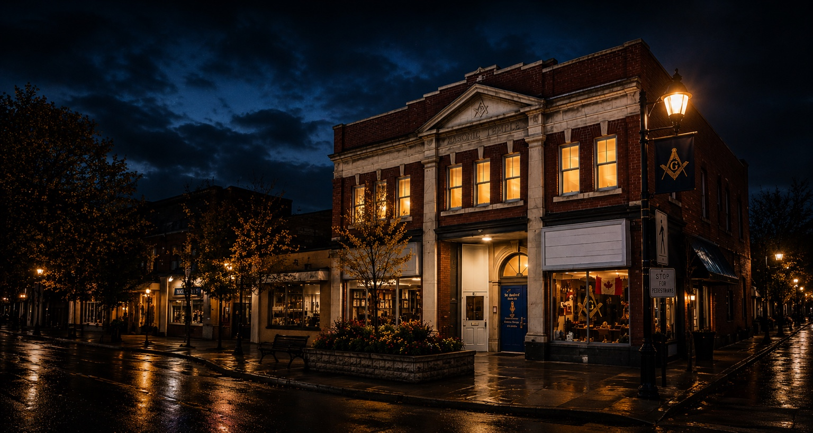
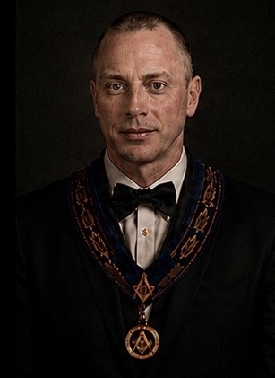
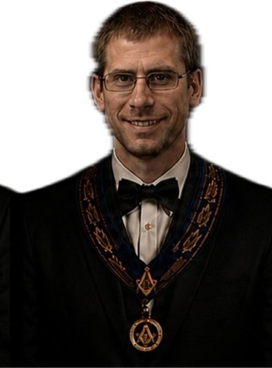
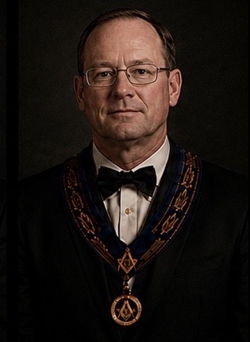
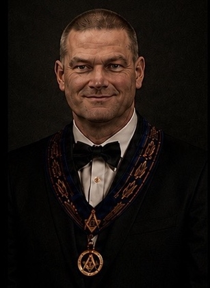
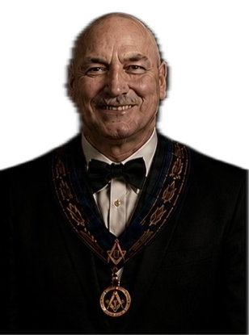

Brotherly Love
The foundation of our Fraternity, looking after one another as true Brothers.

St. John's Lodge No. 63 is one of the earliest Masonic Lodges in Ontario, proudly serving Carleton Place and the surrounding community for over 180 years.
The foundation of our Fraternity, looking after one another as true Brothers.
Charity in action. We support our community and those in need.
A constant pursuit of knowledge, understanding and personal growth.
Chartered in 1843, St. John's Lodge No. 63 is one of the earliest Masonic Lodges in Ontario.
We are a Masonic Lodge under the jurisdiction of the Grand Lodge of Canada in the Province of Ontario.
Our members are men from all walks of life who come together as Brothers to build friendships, strengthen character, and make a positive difference.
Learn More About UsBecoming a Mason is a personal journey.
Reach out to us and express your interest.
Meet with our members and learn more.
If it's the right fit, take the next step.

Worshipful Master

Senior Warden

Junior Warden

Secretary

Treasurer
Discover our rich history and the milestones that have shaped our Lodge.
Explore Our HistoryAccess resources, events and member information.
Member Login
55 Bridge Street
Carleton Place, ON K7C 2V3
secretary@stjohns63.ca
(613) 253-0634
Send A Message